3. DESCRIÇÃO E ABORDAGEM DO ALGORITMO
Nesta seção serão abordados todas as funcionalidades do toolkit, versão 4.0, especificamente voltado à Análise Temporal da Dinâmica da Cobertura e Uso da Terra, tendo por referência os mapas de cobertura e uso da terra, vigor das pastagens da Coleção MapBiomas 9.0, bem como imagens das séries Landsat, mapeamento detalhado das pastagens à nível de propriedade e o cálculo da perda anual média do solo
3.1 - Análise Temporal da Dinâmica da Cobertura e Uso da Terra (toolkit 4.0)
O toolkit versão 4.0 permite ao usuário explorar a série histórica dos mapas de cobertura e uso da terra da Coleção 9 do MapBiomas, mapear à nível de propriedade as pastagens e calcular a perda anual média do solo. Ao fazer o upload de um arquivo vetorial, o usuário pode analisar instantaneamente a dinâmica da cobertura da terra entre 1985 e 2023 para as classes: Soja, Cana, Pastagem, Vegetação Natural, Silvicultura, Outras Lavouras, Outros, Água e Mosaico de Uso. Além disso, é possível acessar imagens Landsat de diferentes anos e períodos (seco, chuvoso e anual), e identificar o nível de vigor das pastagens.
A Figura 01 mostra o fluxograma do processo de usabilidade da Análise Temporal da Dinâmica de Cobertura e Uso da Terra.
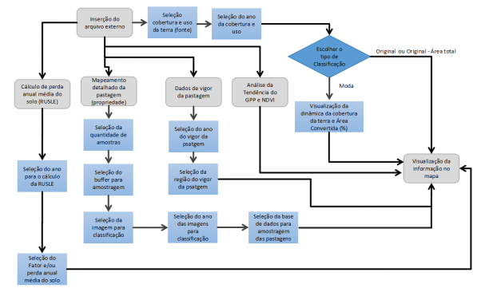
Figura 01 - Fluxograma de processo da Análise da Dinâmica de Cobertura e Uso da Terra.
3.1.1 - Variáveis e Parâmetros
A entrada principal do toolkit é um arquivo poligonal das áreas de interesse da Acelen Renováveis. O usuário insere esse arquivo fazendo o upload dele como um asset no Google Earth Engine.
O usuário pode interagir com os seguintes parâmetros do toolkit:
-
Filtro da camada de entrada: Permite ao usuário filtrar a camada de entrada a partir do conjunto de atributos, antes da inserção no mapa;
-
Visualização da camada a partir de um raio de Influência: Permite que o usuário visualize sua área de interesse sobre um raio de influência (buffer)
-
Data de análise da cobertura e uso da terra: O período específico para a análise temporal;
-
Período de aquisição das cenas Landsat: O período (chuvoso, seca ou anual) de visualização das imagens dos satélites Landsat (5, 7, 8 e 9);
-
Tipo de classificação: Forma de visualização das classes de cobertura e uso da terra na propriedade, sendo: Moda, Original e Original - Área Total;
-
Visualização do vigor de pastagens: Visualização dos níveis de vigor das áreas de interesse da Acelen Renováveis, a partir dos dados do vigor da vegetação normalizados por biomas (Brasil) e por estados (no momento, disponível apenas para Minas Gerais e Bahia);
-
Mapeamento automático das pastagens ao nível de propriedade: O mapeamento automático das pastagens é realizado sobre a camada de entrada. O usuário pode selecionar a quantidade de amostras, a área de influência (buffer) e as bases de dados de uso e cobertura da terra, a fim de coletar informações das pastagens usadas no processo de classificação;
-
Cálculo da perda média anual de solo: O cálculo da perda média anual de solo, usando a equação RUSLE, é aplicado na bacia hidrográfica onde a área de interesse do usuário está inserida;
-
Análise de tendência da pastagem na propriedade: Analisa-se a tendência dos valores de NDVI e dos valores de produtividade primária bruta (GPP), derivados de séries temporais de imagens Landsat, nas áreas de pastagem contidas na camada de entrada definida pelo usuário.
-
Série temporal de cobertura e uso da terra (gráfico): Gera um gráfico (para a área de interesse) que mostra a evolução do uso e cobertura da terra ao longo do tempo;
-
Taxa de conversão: Verifica a taxa de conversão de áreas naturais para antrópicas para cada área de interesse;
-
Análise temporal da evolução das áreas de pastagem sobre áreas naturais e outros: Visualização dos valores das áreas em hectares das classes (pastagem, vegetação natural e outras), ao longo do tempo, para cada área de interesse.
-
Download das camadas do toolkit: Permite o usuário fazer download da camada que está presente no mapa e/ou a série temporal das bases de dados contidas no toolkit, como: Vigor das pastagens e o uso e cobertura da terra (Mapbiomas)
3.1.2 - Processamento
Os mapas de cobertura e uso da terra compreendem 29 classes, as quais, com o intuito de melhorar o entendimento e as análises da dinâmica e uso da terra nas áreas de interesse da Acelen Renováveis, foram agrupadas em nove classes: Soja, Cana, Pastagem, Vegetação Natural, Silvicultura, Outras Lavouras, Outros, Água e Mosaico de Uso. A tabela 02 mostra o agrupamento das classes de cobertura e uso da terra em relação à base de dados original:
Tabela 02 - Classes agrupadas conforme as nove classes de interesse consideradas neste estudo.
| Classe Agrupada | Classe Original |
|---|---|
| Soja | Soja |
| Cana | Cana |
| Pastagem | Pastagem |
| Vegetação Natural | Formação Florestal, Formação Savânica, Mangue, Restinga Arbórea, Campo Alagado e Área Pantanosa, Formação Campestre e Restinga Herbácea |
| Silvicultura | Silvicultura |
| Outras lavouras | Lavoura temporária, Arroz, Algodão, Outras lavouras temporárias, Café, Citrus, Outras Lavouras perenes |
| Água | Rio, lago, oceano e aquicultura |
| Mosaico de usos | Mosaico de usos |
| Outros | Todas as classes que restaram e que não foram adicionadas nas anteriores |
Quando o usuário opta por visualizar a moda das classes dentro de uma área de interesse, a ferramenta identifica e classifica essa área com base na classe de cobertura e uso da terra que mais se repete. Isso proporciona uma visão clara da cobertura dominante na região selecionada.
3.1.3 - Dados de entrada
Os dados de entrada para o toolkit são informações vetoriais de estrutura poligonal. Inicialmente, o dado de entrada deve estar no formato de arquivo vetorial shapefile, e compactado no formato .zip. Com o dado no formato .zip, é necessário fazer o upload desse arquivo na plataforma Google Earth Engine, com o usuário já autenticado nessa mesma plataforma.
Uma vez que o arquivo vetorial tenha sido adicionado ao toolkit, o usuário pode filtrar áreas de interesse a partir das informações contidas no respectivo conjunto de atributos. Especificamente, no menu Entrada de Dados, cole o link do asset para integrá-lo à ferramenta. Após a visualização no mapa, você pode refinar a análise utilizando filtros específicos. Basta clicar na opção e filtro e depois, selecionar o campo e o valor desejado para isolar a área geográfica de interesse dentro do seu conjunto de dados.
3.1.4 - Visualização dos mapas de cobertura e uso da terra no
Para visualizar os mapas de cobertura e uso da terra na ferramenta a partir de um arquivo externo, no menu Classificação Uso da Terra, o usuário deve seguir estas etapas:
-
Na opção "Fonte de dados", selecione a fonte de dados de uso da terra que deseja visualizar. Atualmente, o toolkit suporta apenas a fonte MapBiomas;
-
No campo "Ano de Análise", deve-se escolher o ano da análise, que está ligado à fonte de dados selecionada;
-
Na opção "Buffer (m)", o usuário pode expandir o limite (raio de influência) da camada de entrada. O objetivo é visualizar os dados de classificação em uma área que se estende além dos limites originais da camada;
-
Após isso, selecione o tipo de classificação que deseja visualizar.
O campo Tipo de Classificação, possui três opções, sendo elas:
-
Moda: O limite de cada área de interesse será classificado a partir da classe majoritária, ou seja, a classe de cobertura e uso da terra que mais se repetir na propriedade / área de interesse;
-
Original: Cada elemento do arquivo externo mostrará todas as classificações em seu interior;
-
Original - Área total: Serão visualizadas todas as classes de cobertura e uso da terra de toda a extensão geográfica do arquivo externo inserido.
Depois da seleção do tipo de classificação, clique no botão Gerar classificação do ano da análise para visualizar o mapa na tela da ferramenta. A tela traz a informação das classes de cobertura e uso da terra, legenda e os gráficos do quantitativo das classes no arquivo inserido, conforme o respectivo ano selecionado pelo usuário. O gráfico gerado pode ser exportado nos formatos: CSV (tabela de dados), SVG e PNG (figura 02).
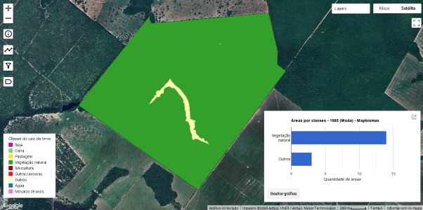
Figura 02 - Visualização do arquivo no mapa da ferramenta Análise Temporal da Dinâmica de Cobertura e Uso da Terra.
3.1.5 - Visualização da dinâmica de cobertura e uso da terra, conversão para uso antrópico e evolução das áreas de pastagens
Para visualizar a dinâmica das classes de cobertura e uso da terra, é necessário que a opção escolhida no campo Tipo de Classificação seja a moda. Clique no ícone e aparecerá no centro superior da tela as opções das informações que o usuário deseja visualizar (figura 03):
(a)
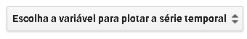
(b)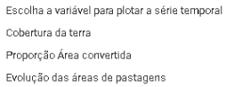
Figura 03 - (a) O menu da ferramenta de gráfico, e (b) opções de visualização dos gráficos.
Após selecionar a opção de visualização do gráfico, clique na propriedade do arquivo externo que você deseja analisar. As figuras 04, 05 e 06 ilustram os resultados dos gráficos de Cobertura da Terra, Proporção de Área Convertida e Evolução das áreas de pastagens
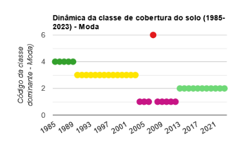
Figura 04 - Dinâmica da Cobertura e Uso da Terra do elemento selecionado
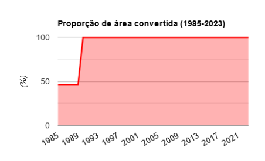
Figura 05 - Proporção de área convertida do elemento selecionado
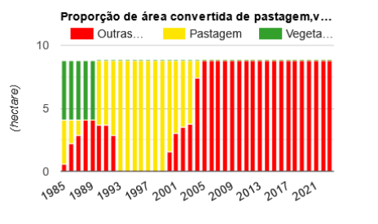
Figura 06 - Evolução das áreas de pastagem
3.1.6 - Vigor da pastagem
Para visualizar os níveis de vigor da pastagem, siga os seguintes passos no menu "Análise de Vigor":
- Selecione o Ano do Vigor (a série temporal disponível vai de 2000 a 2023).
- Defina a região para Análise (selecionando entre Brasil e Unidades da Federação - UF's).
- Ajuste o valor do Buffer em metros para a análise.
- Por fim, clique no botão "Visualizar Vigor"..
A figura 07 mostra a visualização do Vigor da pastagem:
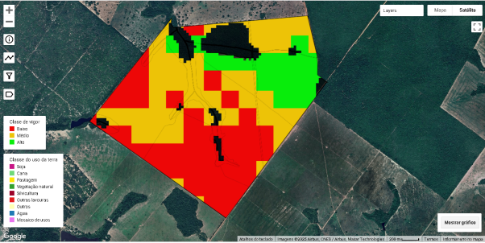
Figura 07 - Visualização do Vigor da Pastagem em 2000 no nível Baixo (Vermelho), Médio (Ocre) e Alto (Verde).
Os dados de vigor utilizado neste toolkit são disponibilizados pelo MapBiomas, sendo gerados pelo Laboratório de Sensoriamento Remoto e Geoprocessamento - LAPIG da Universidade Federal de Goiás (conforme metodologia proposta por Santos et al., 2022 e modificada por Ferreira Jr et al., 2023).
3.1.7 - Mapeamento automático de pastagens em nível de propriedade
Para o mapeamento automatizado das pastagens em nível de propriedade, o usuário deve, inicialmente, acessar o Menu Mapeamento Automático Detalhado - Pastagem, selecionar a base de dados para a classificação. As opções disponíveis são Sentinel-2 e Embeddings, ambas com resolução espacial de 10 metros.
Após a seleção, o usuário define a quantidade de amostras, o buffer (em metros) e o ano para o mapeamento. Por fim, ele escolhe a fonte de dados de pastagem existentes para a geração de amostras, as quais serão usadas pelo algoritmo Random Forest para o mapeamento final.
As fontes de mapeamento existentes incluem dados do MapBiomas, dados da iniciativa Global Pasture Watch (Parente et al., 2024) e a sobreposição das áreas de pastagem de ambas as fontes. A figura 08 apresenta o resultado do mapeamento automático de pastagem em nível de propriedade.
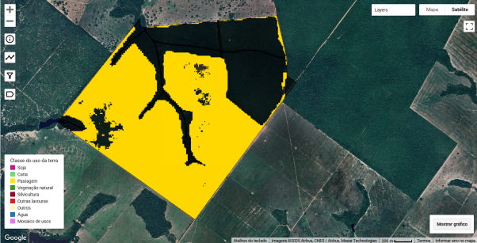
Figura 08 - Exemplo do mapeamento automático das pastagens em nível de propriedade.
3.1.8 - Cálculo da perda média anual do solo (RUSLE)
Para calcular a perda média anual de solo, no menu Método RUSLE, selecione um ano no período de 2017 a 2024. Em seguida, escolha qual fator deseja visualizar ou a própria perda média anual de solo e posteriormente, o usuário selecionará qual divisão da bacia hidrográfica deseja calcular, sendo as opções a divisão do DHN e do DNAEE. A figura 09 apresenta um exemplo do resultado.
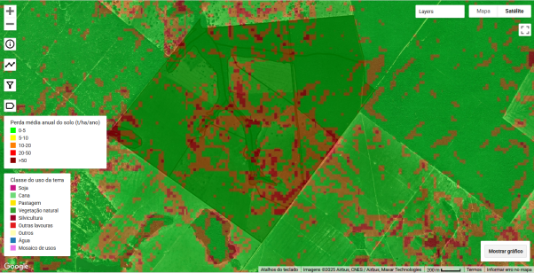
Figura 09 - Exemplo da perda média potencial anual de solo (t/ha/ano).
3.1.9 - Análise de tendência da pastagem na propriedade
Nesta etapa é possível avaliar a tendência dos valores de produtividade primária bruta e NDVI, conforme a mancha de pastagem identificada nas áreas de interesse na Acelen. Para realizar a análise de tendência da pastagem, acesse o menu "Análise de Tendência das Pastagens".
3.1.9.1 - Análise de tendência da Produtividade Primária Bruta (GPP)
Na análise de tendência da produtividade das pastagens nas áreas de interesse da Acelen, tivemos que organizar uma base de dados histórica bimestral de GPP, cobrindo o período de 2000 a 2024. A inserção desses dados no toolkit seguiu três grandes etapas:
-
Coleta de Dados: Baixamos as imagens via shell que estão armazenados no servidor da OpenGeoHub, que é uma fundação de Pesquisa sediada em Doorwerth, localizada nos Países Baixos, que se dedica a promover o acesso aberto a dados geoespaciais e softwares de código aberto. Os dados possuem uma resolução espacial de 30 metros, e o cálculo do GPP segue a metodologia adotadas por Isik et al. (2024).
-
Junção das imagens e um único arquivo: Em vez de manipular centenas de arquivos individuais, agrupamos todas as imagens baixadas em um único arquivo georreferenciado (formato multibanda). Nele, cada registro bimestral do GPP é armazenado como uma banda distinta, facilitando o processamento e a organização espacial.
-
Upload dos arquivos no Google Earth Engine: Por fim, fizemos o upload desse arquivo para o Google Earth Engine. Para usuários de conta gratuita, o Google Earth Engine limita a quantidade de upload por imagem em 10GB, com isso, tivemos que recortar as imagens do GPP bimestral em pedaços inferior ao tamanho permitido pela Google.
Com os arquivos de GPP na plataforma do Google Earth Engine, o usuário pode fazer a análise da tendência nas áreas de pastagem na propriedade, acessando o menu de Análise de Tendência das Pastagem. De acordo com as seguintes etapas:
-
Selecione o produto Produtividade Primária Bruta (GPP)
-
Selecione o período de análise nos campos Ano Inicial e Ano Final.
-
Após a seleção de todos os parâmetros, clique no botão "Calcular Tendência" para gerar o gráfico que indica se a tendência do GPP nas áreas de pastagem é positiva ou negativa.
As figuras 10 e 11 apresentam exemplos do resultado da Análise de tendência da pastagem usando o produto Produtividade Primária Bruta (GPP).
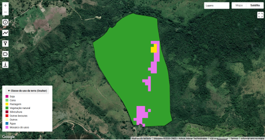
Figura 10 - Ocupação da área de uso e cobertura da terra em 2001
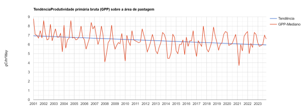
Figura 11 - Tendência de GPP da pastagem da propriedade rural de 2001 à 2023
3.1.9.2 - Análise de tendência do NDVI
Para verificar a tendência dos valores de índice de vegetação (NDVI) nas áreas de pastagem da propriedade, acesse o menu Análise de Tendência das Pastagem.
-
Selecione o produto Índice de Vegetação (NDVI)
-
Selecione o período de análise nos campos Ano Inicial e Ano Final.
-
Em seguida, escolha os parâmetros Janelas de Análise do Algoritmo TMWM:
-
O campo "Tamanho da Janela - Anos" representa o número máximo de anos do mesmo mês utilizado no gap filling.
-
O campo "Tamanho da Janela - Dias" define o valor em dias dos vizinhos adjacentes do mesmo ano.
-
Após a seleção de todos os parâmetros, clique no botão "Calcular Tendência" para gerar o gráfico que indica se a tendência do NDVI nas áreas de pastagem é positiva ou negativa
As figuras 12 e 13 apresentam exemplos do resultado da Análise de tendência da pastagem usando o Índice de Vegetação (NDVI).
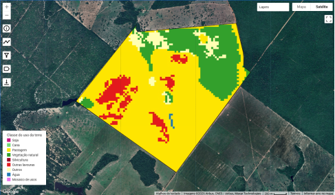
Figura 12 - Área ocupada por pastagem em 2016
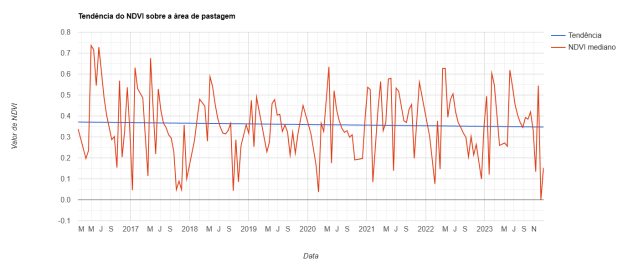
Figura 13 - Tendência da pastagem da propriedade rural de 2016 à 2024
3.1.10 - Download das camadas no toolkit
No toolkit, o usuário pode fazer o download tanto das camadas geradas por sua interação com a ferramenta quanto das bases de dados estáticas, como os dados de uso e cobertura da terra do MapBiomas e os dados de vigor da pastagem. Para executar o download, o usuário deve clicar no ícone.
Na parte central inferior da tela, surgirá uma janela (conforme a Figura 14), onde é possível selecionar as camadas da base de dados estática ou as camadas geradas que estão sendo visualizadas no mapa. Após selecionar a camada desejada, clique no botão "Download". Em seguida, acesse a aba "Tasks" e clique no botão "Run" referente à camada selecionada para iniciar a exportação. O arquivo será exportado para a pasta "GEEX" no Google Drive pessoal do usuário.
A Figura 14 mostra o painel de download do toolkit.
Figura 14 - Painel de download da camada do toolkit.